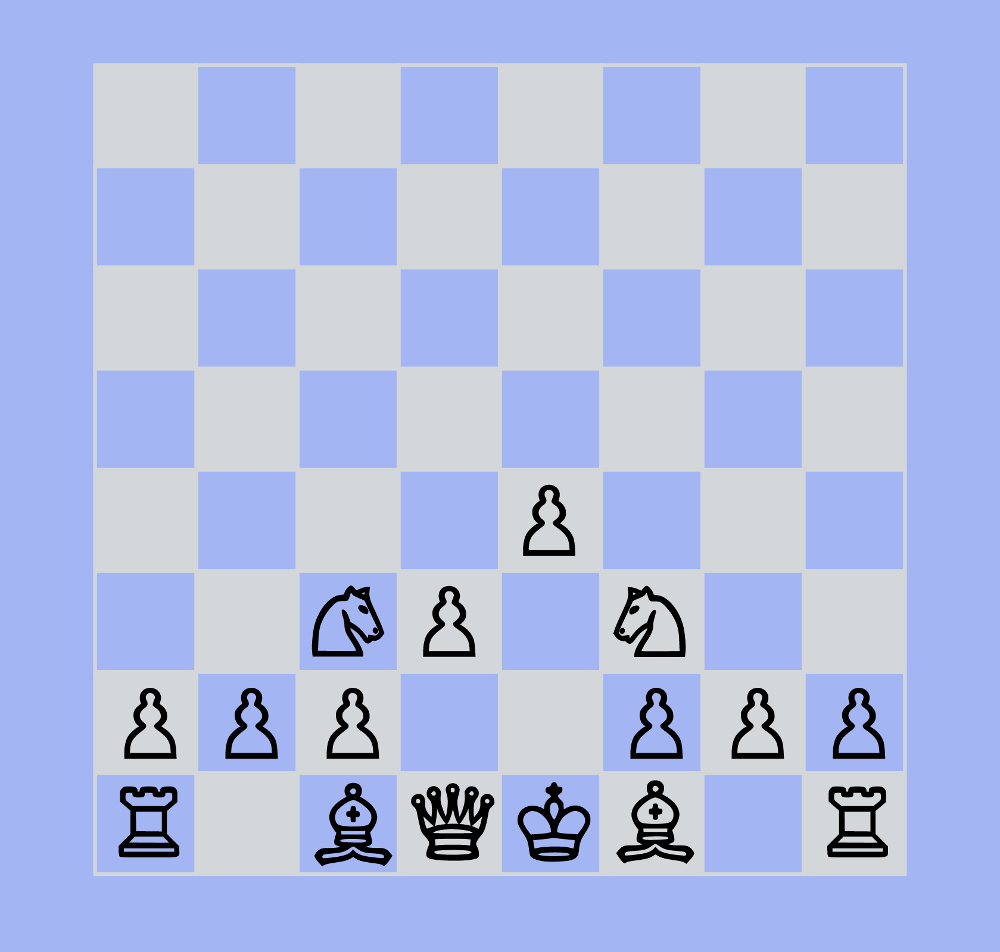

The game is composed of three parts; the opening, middlegame, and endgame. There are four important aspects and basic strategies you should follow when playing the game.
BOARD GEOGRAHY
When starting the game, the center squares are important to gain control of. You want to place your pieces near or towards the center.
DEVELOPMENT
The next step is to develop your pieces. You want to place your pieces in active squares, or locations where they will be useful in the future.

CASTLING
Castling is when you switch your rook and your king. This is good for keeping your king out of the center and in a safer position. Castling can only happen under the condition that the rook and the king have not moved during the game, the king is not in check, and castling does not put the king in check.